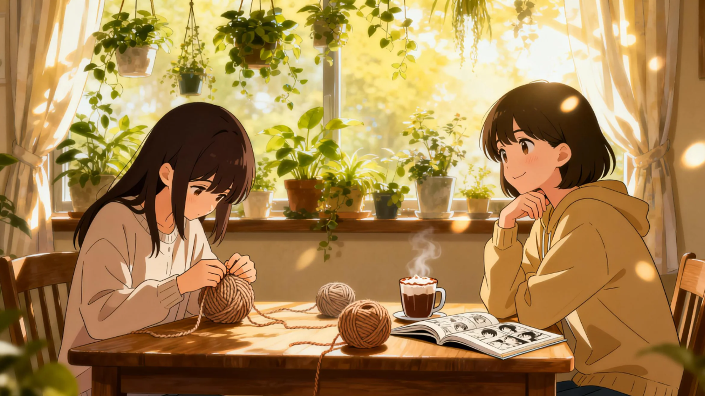
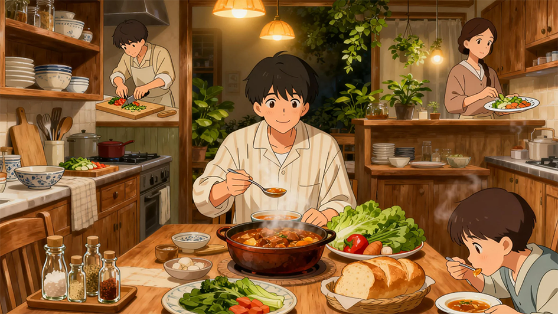

♪
janyanculture.com
音乐
动漫
比赛
关于我们
← 返回动漫区
新番连载 · 追番不迷路
本季追番清单
用“爽点”分类法选片：高燃战斗、反转智斗、轻松喜剧、治愈日常。先锁定 1 部最对味的开追。
先看预告片 →
去逛人物墙
按“爽点”挑片
不是“新不新”，而是“合不合你”。
高燃作画
反转智斗
轻松喜剧
治愈日常
高燃
入坑成本低
高燃战斗向
如果你追求“每集都能爽一下”，先从打戏强、节奏快的作品入手。

治愈
情绪回报足
治愈日常向
如果你想放松：关系轻盈、细节温柔、看完“想变好一点”。
都市异能
反转
设定密度高：越看越懂
喜欢“信息量 + 压迫感”的，往往会被这类作品拿捏。
科幻机甲
宏大叙事
世界观党首选
适合“想看大场面”的周末，配合沉浸式配乐更爽。
恋爱奇幻
心动
甜但不腻：细节拿捏
关系推进“有节奏”，甜点与拉扯交替，最容易让人追更。
运动热血
团队
逆袭最容易共情
队友、训练、比赛三件套：每集都能给你“打鸡血”。

美食日常
放松
治愈系“下饭番”
不卷不虐，节奏舒服：适合睡前看一集收尾。
冒险幻想
成长
少年感：一路升级
“越努力越强”的成长曲线，最适合大众长期追。
群像
羁绊
角色多但不乱：越看越香
每个人都有动机与高光：这类作品非常“耐追”。